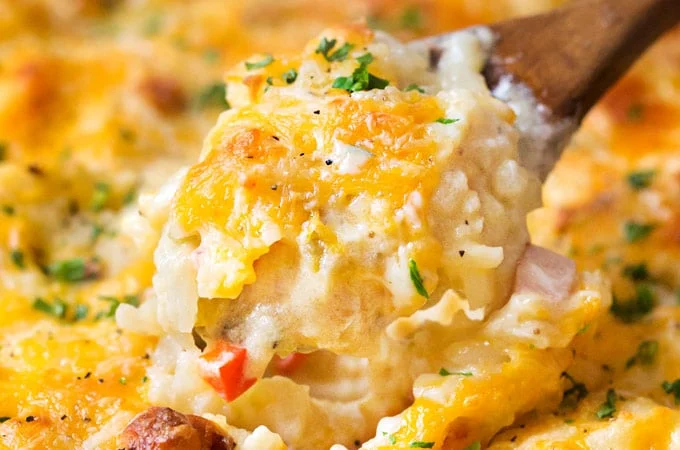

Hashbrown Casserole
Hashbrown Casserole

A savory, cheesy, dish.
Ingredients
- 16oz Sour Cream
- 1 can of cream of chicken soup
- 3 cups shreaded cheese
- half a stick of butter
- 1 onion, diced
- 2 - 3 cups of rice crispies
- 9 x 13 pan
- Hashbrowns
Steps
- Let frozen Hashbrowns thaw
- Mix the cheese, diced onion, sour cream.
- Add the Cream of chicken soup, and thawed hashbrowns spread into a 9 x 13 pan
- Melt butter into a medium bowl, add in enough rice Kripies to butter so that they are not all soggy.
- Bake at 350 degrees for one hour, and enjoy